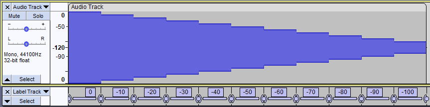
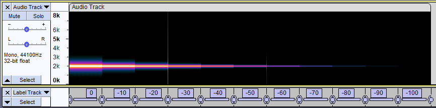
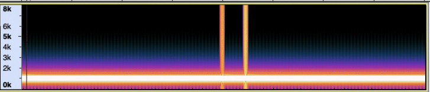

Spectrogram View
To select Spectrogram view, click on the track name (or the black triangle) in the Track Control Panel which opens the Track Dropdown Menu.
Contents
- Comparing Waveform View to Spectrogram View
- What the Colors Mean
- Time Smearing and Frequency Smearing
- Vertical Zooming
- Effect of Different Window Types
- Zero padding factor
- Logarithmic Spectrogram View
- Mel, Bark, ERB and Period Spectrogram views
- Example of choosing the right settings for the job
- Spectral selection
- Per Track Spectrogram Settings
Comparing Waveform View to Spectrogram View
Here is a stereo music recording in waveform view:

Here is the same recording in spectrogram view:

The waveform view can be switched to a Spectrogram view by clicking on the track name (or the black triangle) in the Track Control Panel which opens up the Track Dropdown Menu where the spectrogram view can be selected.
What the Colors Mean
To demonstrate how the various settings affect the appearance of an audio track in spectrogram view, we will start with this artificially constructed test track. It consists of 10 segments of a sine wave tone at 2000 Hz, each 2 seconds long. The level of each segment in dB is indicated by the labels below the audio track.
This is how the track appears in waveform dB view.
- 
This is how the track appears in spectrogram view, using the default settings.
- 
The default settings are:
- Window size: 1024
- Window type: Hanning
- Zero padding factor: 1
- Minimum frequency (Hz): 0
- Maximum frequency (Hz): 8000
- Gain (dB): 20
- Range (dB): 80
- Frequency Gain (dB/dec): 0.
What do these settings mean and how to they relate to what you see on the screen?
As you can clearly see, the minimum and maximum frequency settings determine the minimum and maximum frequencies displayed, as indicated in the track vertical scale.
Gain can be said to increase the "brightness" of the display. It does this by amplifying the signal by the indicated amount. With the default setting of 20 dB, any frequency band that originally had (before amplification) a level of -20 dB or greater (and now, after amplification has a level greater than 0 dB) will be displayed as white. Similarly the "lower" level bands will also "get brighter".
There are six color bands in spectrogram view: white, red, magenta, dark blue, light blue and gray. The Range setting determines the spacing between colors.
With the default settings of Gain = 20 dB and Range = 80 dB, the colors correspond to the following levels:
- anything above -20 dB is indistinguishably white (the tone at -10 dB in the image above is white)
- levels from -40 dB to -20 dB transition from red to white (the tone at -30 dB in the image above is light red)
- levels from -60 dB to -40 dB transition from magenta to red (the tone at -50 dB in the image above is magenta)
- levels from -80 dB to -60 dB transition from dark blue to magenta (the tone at -70 dB in the image above is bluish purple)
- levels from -100 dB to -80 dB transition from light blue to dark blue (the tone at -90 dB in the image above is light blue)
- anything below -100 dB is gray.
Time Smearing and Frequency Smearing
Spectrogram view uses the Fast Fourier Transform (FFT) to display the frequency information versus time. There is an inherent trade-off between frequency resolution and time resolution.
The image below shows the spectrogram view of a pure 1000Hz tone with two clicks very close together. With a window size of 256 we can see the two clicks.
- 
Changing the Window Size to 2048 results in better frequency resolution (the white band is narrower). However the time resolution is worse. The two clicks have been smeared together into one.

The image below shows the spectrogram view of a musical note with many overtones. With a window size of 256 the overtones are not clear.

When we change the window size to 2048 we can see the overtones.

When choosing which window size to use, the general rules are:
- if you need good time resolution (for example to find clicks) use a smaller window size
- if you need good frequency resolution (for example to find an annoying tone) use a larger window size.
Vertical Zooming
Magnifiers
You can zoom in on the vertical (frequency) axis by left-clicking in the Vertical Scale and using the magnifiers (when these are enabled inTracks Behaviors Preferences).
In the image below we are about to zoom in on one overtone of the musical note.

After zooming in, the vertical ruler changes to allow greater precision of the scale.

Alternatively you can right-click in the Vertical scale to bring up a dropdown context menu which has commands for vertical zooming:

Effect of Different Window Types
The image above uses the Hanning Window Type.
Changing to the Blackman-Harris Window Type gets rid of much of the spectral leakage at the expense of lower frequency resolution (note that the red band near the 2.0k mark is wider).

Changing to a rectangular window causes the track to be redrawn a little faster at the expense of very bad spectral leakage. However, the frequency resolution is better (the red band near the 2.0k mark is narrower).

The is no "right" window type. When you are using spectrogram view to analyze audio, or to track down certain elements in a recording, use whichever window type best highlights the information you are trying to find.
Zero padding factor
Larger values give finer interpolation of the colors along the vertical axis, at the expense of more computation time. This setting does not affect the time vs. frequency resolution tradeoff. In other words it does not give better frequency resolution.
Here is the musical note again, with a zero padding factor of 1.
Here is the same note, with a zero padding factor of 8.

Logarithmic Spectrogram View
Choosing Logarithmic from the Spectrogram Settings in the Track Control Panel dropdown menu will display a logarithmic vertical scale.
Here again is the musical note with overtones shown in Spectrogram view.
Here is the same note, this time in Logarithmic Spectrogram view

Musical overtones form a linear sequence and are generally best viewed in Linear Spectrogram view.
Here is a chromatic scale shown in Spectrogram view.

Here is the same scale, this time in Logarithmic Spectrogram view

A musical scale is an exponential sequence, and is generally best viewed in Logarithmic Spectrogram view.
Mel, Bark and ERB Spectrogram views
There are three additional styles of Spectrogram view that van be selected from the Track Control Panel dropdown menu or from Preferences:
- Mel: The name Mel comes from the word melody to indicate that the scale is based on pitch comparisons. See this Wikipedia page.
- Bark: This is a psychoacoustical scale based on subjective measurements of loudness. It is related to, but somewhat less popular than, the Mel scale. See this Wikipedia page.
- ERB: The Equivalent Rectangular bandwidth scale or ERB is a measure used in psychoacoustics, which gives an approximation to the bandwidths of the filters in human hearing. It is implemented as a function ERBS(f) which returns the number of equivalent rectangular bandwidths below the given frequency f. See this Wikipedia page.
These scales aid spectral editing in that you can see down to 0 Hz without too much screen height devoted to the low frequencies, where thumps might need treating with a highpass filter in Spectral edit multi tool and the geometric mean frequency line is unimportant. In contrast, within higher frequencies you often want to set a notch with multi tool or use parametric equalization, drawing a spectral selection around an undesirable sound with the geometric mean line approximately centered in that selection.
Comparison of Mel, Logarithmic and Linear Spectrogram views
The image below shows the scaling differences in different Spectrogram views of the same audio:

Period Spectrogram view
- Period: This scale is the reciprocal of frequency (1/frequency) and attempts to visualise Enhanced Autocorrelation. It is therefore best used with the "Pitch (EAC)" algorithm, which is the same as the "Pitch (EAC)" View Mode choice in previous Audacity versions. To aid comparison with other scales, small period values (high frequencies) are plotted at the top. This scale tends to give the most screen estate to plotted areas, but Logarithmic scale gives the more correct representation of pitch, because Equal Temperament divides the octave into 12 parts, all of which are equal on a logarithmic scale.
Example of choosing the right settings for the job
Here is a music track displayed in Spectrogram view with the default settings of: Window size of 256, Window type of Hanning, Minimum Frequency 0 and Maximum frequency 8000. This is not very useful for identifying the different musical elements.

Here is the same track displayed in Logarithmic Spectrogram view. This is still not very useful for identifying the different musical elements.

Different settings can improve the visibility of certain elements in the recording. In the image below the settings were:
- Window size of 2048 (larger window size improves frequency resolution)
- Window type of Hanning (no change from previous)
- Zero padding factor of 1 (no change from previous)
- Minimum Frequency 20 (remove display of sub-sonic frequencies)
- Maximum frequency 22000 (include display of higher frequencies).

Spectral selection
To define a time range combined with a spectral range, hover at a vertical position that you want to be the approximate center frequency to act on then click and drag a selection horizontally. A horizontal line appears beside the I-Beam mouse pointer that defines the center frequency.
Drag vertically, with or without continuing to drag horizontally, to define the range of frequencies to be acted on. A "box" containing a combined frequency and time range is now drawn in a colored tint as shown below (the exact color of the tint will depend on the version of Audacity and the settings of your monitor):

The frequencies in the spectral selection can then be filtered in various ways, affecting their amplitude, using the special Spectral edit effects in the Effect Menu. This can be useful to remove unwanted extraneous noises from the audio or to apply very specific tone quality changes to it. For full details, see Spectral Selection.
Per track Spectrogram Settings
It is possible to temporarily change the Spectrogram settings for a particular Spectrogram track by opening the Audio Track Dropdown Menu on the Spectrogram track you want to change, then choose Spectrogram Settings.... This opens a dialog similar to Spectrograms Preferences with the same settings available.

Changes you make when you press the button only persist for that track while the project window is open. This is the case even if you save a project. Use Spectrograms Preferences instead to make permanent changes to the default Spectrogram settings with which a new Spectrogram track will open.
See Spectrogram Settings for more details.